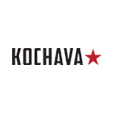

Tech-Consulting
Mercury process to success
전문적인 트래킹
-
머큐리프로젝트는 글로벌 트랙킹 솔루션 구글태그매니저(GTM)를 기반으로 합니다.
-
트랙킹은 디지털 광고의 정확한 성과 측정을 위한 가장 기본적인 작업으로,
비전문적인 트랙킹 작업은 광고 성과의 누수 또는 과잉 측정 결과를 보여주기도 합니다.
이런 부정확한 트랙킹 결과로 매체별 효과 분석 오류가 발생하고 추후 전체 디지털 캠페인 성과 개선
작업에 큰 지장을 초래하게 됩니다. 반대로, 각 솔루션별 특장점을 고려, 다양한 디지털 캠페인의 KPI에
맞춘 전문적인 트랙킹 설정은 정확한 매체별 성과 분석을 가능하게 합니다. -
머큐리프로젝트는 글로벌 트랙킹 솔루션 구글태그매니저(GTM)를 기반으로 다양한 유형의 트랙킹
솔루션과 연동하여 기본적인 광고 유입 및 사이트 분석을 넘어, 온라인 매출 연계를 위한 전자상거래
설정을 지원합니다.
- ANALYTICS
-


- TRACKER
-


Viewability
MERCURY MEDIA VIEWABILITY
뷰어빌리티
-
뷰어빌리티란 웹사이트나 모바일앱의 광고가 유저에게 얼마나 노출되었는지를 나타내는 개념입니다.
-
바야흐로 이 시대 미디어의 화두는 MEDIA VIEWABILITY 입니다.
지금은 채널 중심의 노출이 아닌, 미디어 컨텍스트 중심의 시청(視聽)을 살펴봐야할 때입니다.
노출되었는가? GRPs / Imps / View
브랜드 콘텐츠가
배포되었는가? Number of Branded
Contents
Preference
Consideration
Purchanse
보았는가? Real GRPs / Media Impact
소비자들이
공감할 수 있는가? Engage Relate to
Media Viewability
Audience
AUDIENCE FUNNEL PLANNING
오디언스 플래닝
-
채널 중심의 지면 바잉을 넘어 모든 결과의 근본적 결정자인 오디언스를 다양한 상황에 맞게 정의 내리고
그들에게 효과적인 메시지 전달을 가능하게 하는 진보된 미디어 플래닝입니다. -
종합적인 측면에서의 마케팅 퍼널을 고려한다면 목표 오디언스는 하나로 정의 될 수 없습니다.
머큐리 프로젝트는 다양한 데이터를 복합적으로 활용, 마케팅 각 단계에 맞는 맞춤형 타겟 플래닝을 하고 있습니다
일반적인 오디언스 플래닝
거주지역 / 구매유무
제품 카테고리
관심유무
Mercury Smart Audience Funnel Planning
거주지역 / 구매유무
제품 카테고리
관심유무
DMP
parth
DMP
party
Dmp
APP/WEB
viewability
- awareness
- interest
- desire
- action
- advocacy
- 1ST AUDIENCE
- 2ND AUDIENCE
- 3ND AUDIENCE
Operations
OPERATIONS BY MERCURY’S EXPERTS
트레이딩
-
머큐리만의 전문 트레이딩 팀이 미디어 퍼포먼스의 성공적인 결과를 이끌어 냅니다.
-
애드테크가 비약적인 발전을 이루는 지금의 시대에도, 캠페인의 KPI를 위한 첫 단계(=설계)는
물론, 확보된 데이터에 대한 해석은 여전히 사람의 영역입니다. -
머큐리프로젝트는 Campaign goal 설정과 Media mix 제안과 같은 Planning 영역은 물론,
겉으로 드러나지 않는 Operation 영역에서도 머큐리만의 노하우를 담아 전문 트레이딩 팀에
의해 개별 캠페인 마다 맞춤 Trading Structure를 세우고, 마이크로 트레이딩 구조를 통해
Risk management를 수행하고 있습니다.
Field Campaign Goal
Field Build Trading Structure
Risk Management
Experts We provide business success
strategies and systems.
Coverage
Mercury Media Coverage
미디어 활용
-
머큐리프로젝트는 브랜드의 성공을 위한 미디어의 모든 과정을 담당합니다.
MEDIA
SYSTEM
-
TRACKING
SOLUTION 
- 


-
Media
buying
solution 

-
Analytics
Solution 


Analysis
MULTI MEASUREMENTS & ANALYSIS
분석
-
머큐리프로젝트는 다중 측정 및 분석을 통한 리포팅을 제공합니다.
-
머큐리의 다각적 어날리틱스 리포팅 시스템은 단순한 수치 보고가 아닌 Next step을 위한
다각적인 인사이트 도출과 분석 영역의 확대를 통해, 더욱 의미 있는 리포팅을 제공합니다.
- Insight Report
-
Dv360을 활용한 오디언스 분석
캠페인 유니크 리치 및 주요 노출 채널 분석 등
- Campaign Manager
-
Assisted Conversion 및 주요 전환 경로 분석
광고 노축과 구매까지의 Time Log 분석 등
- Site & App 구조 분석
-
광고를 넘어 사이트 및 앱 전환 효율 구조 분석
기술적 점검을 통한 사이트 및 앱 전화 테스트
Clients
Mercury process to success
함께 하는 기업
-
최상의 비지니스 파트너 머큐리프로젝트와 성장해 가는 기업입니다.